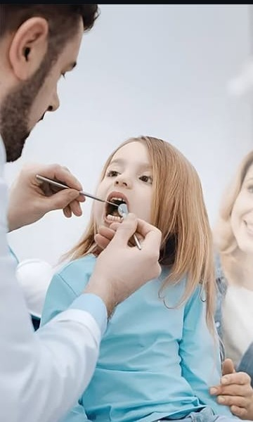

Home / About
About Mano Dental & Root Canal Centre
Expert, gentle dental care for the whole family in Dindigul.
Our story
Care that begins with listening
Mano Dental & Root Canal Centre is a specialist clinic in V.M.R Patti, Dindigul. We are known for root canal treatment and gentle pediatric dentistry, with complete care for adults too.
Our aim is simple: relieve pain, save natural teeth wherever possible and make every visit calm and clear. We explain each step, so you always know what is happening and why.

Our dentist
Dr. M. Nirmal Kumar MDS
Conservative Dentist and Endodontist.
- Root canal and endodontic care
- Tooth-coloured fillings and restorations
- Pediatric dentistry
Our values
What we stand for
💜
Gentle first
We go at your pace and never rush treatment.
🦷
Save the natural tooth
Where possible we repair rather than remove.
💬
Clear communication
Simple explanations and honest advice, no pressure.
🧼
Safe and hygienic
Clean, sterilized and modern setup for every patient.
Your smile deserves expert, gentle care
Book a visit with Dr. M. Nirmal Kumar MDS. We will confirm your time by call or WhatsApp.